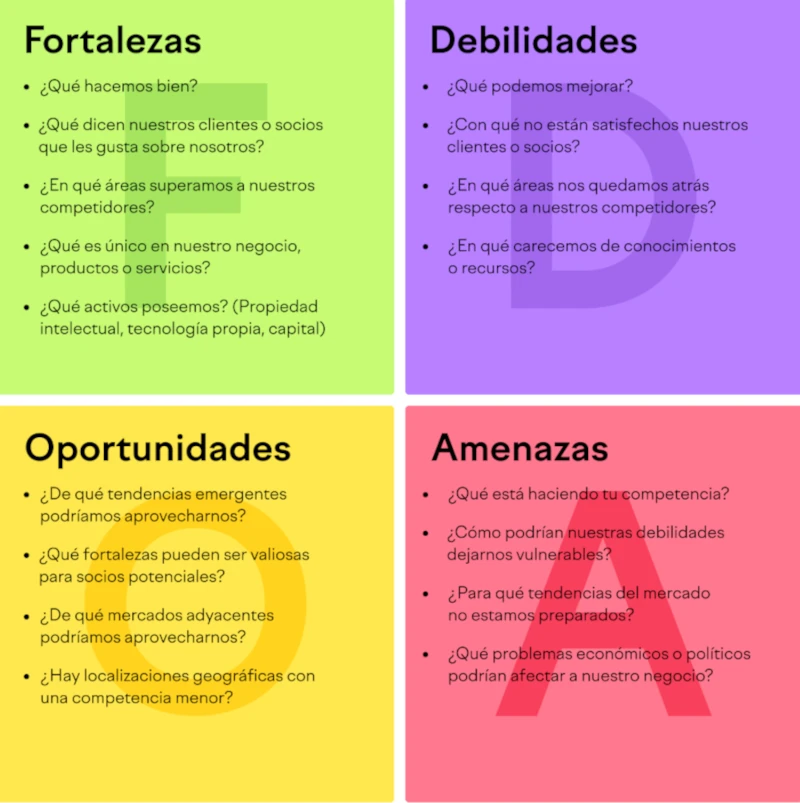

Matriz FODA
Inicio
La matriz FODA es una herramienta de análisis estratégico que permite evaluar la situación de una organización o proyecto. Esta es excelente para reunir información y documentar las preguntas que te llevarán a tomar las decisiones. No solo será útil tenerla a mano para consultarla más adelante, sino que además resultará excelente para visualizar los patrones que puedan surgir.
1. Dibuja la matriz
- Crea una cuadrícula de 2x2
- Etiqueta a las cuadrantes: Fortalezas, oportunidades, debilidades y amenazas.
2. Recopila información
- Reúne datos relevantes sobre la organización, el mercado, la competencia y el entorno. Esto puede incluir encuestas, entrevistas, análisis de mercado, etc.
3. Identifica las fortalezas
- Pregúntate: ¿Qué hacemos bien? ¿Cuáles son nuestros recursos clave?
- Anota las fortalezas en el cuadrante correspondiente.
4. Identifica las debilidades
- Reflexiona sobre: ¿En qué áreas podemos mejorar? ¿Qué recursos nos faltan?
- Registra las debilidades en el cuadrante inferior izquierdo.
5. Identifica las oportunidades
- Considera: ¿Qué tendencias podemos aprovechar? ¿Hay cambios en el mercado que beneficien a nuestra organización?
- Escribe las oportunidades en el cuadrante superior derecho.
6. Identifica las amenazas
- Piensa en: ¿Qué factores externos podrían perjudicarnos? ¿Qué está haciendo la competencia?
- Anota las amenazas en el cuadrante inferior derecho.
7. Identifica la matriz
- Examina cómo las fortalezas pueden aprovechar las oportunidades y cómo pueden contrarrestar las amenazas.
- Considera también cómo las debilidades pueden ser mitigadas mediante las oportunidades o si podrían hacer frente a las amenazas.
8. Desarrolla estratégias
- A partir del análisis, define estrategias específicas:
- FO (Fortalezas-Oportunidades):Estrategias que utilizan fortalezas para aprovechar oportunidades.
- DO (Debilidades-Oportunidades):Estrategias que buscan mejorar debilidades aprovechando oportunidades.
- FA (Fortalezas-Amenazas):Estrategias que usan fortalezas para enfrentar amenazas.
- DA (Debilidades-Amenazas):Estrategias que buscan minimizar debilidades y evitar amenazas.
